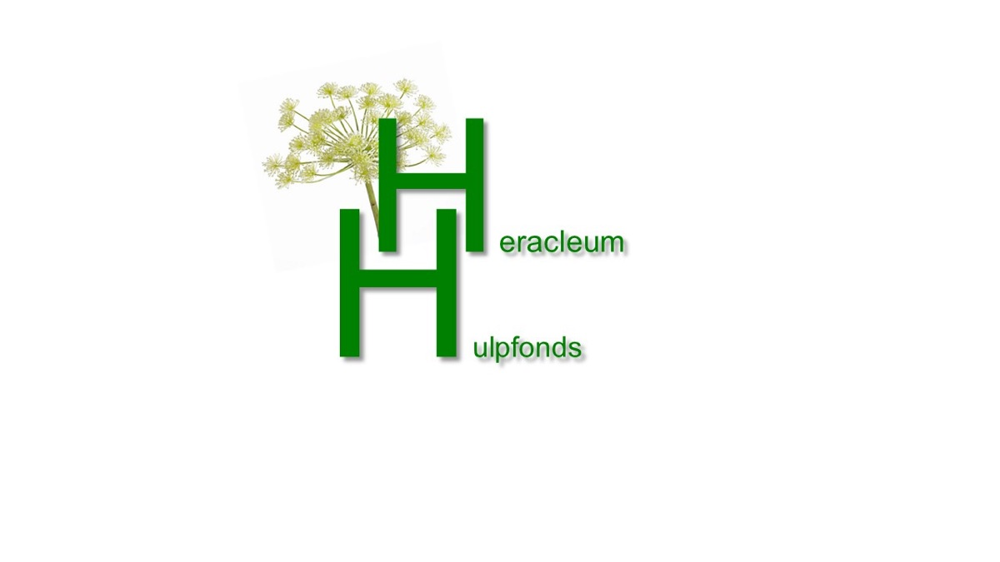

December 2025
Heracleum Hulpfonds kent subsidie toe aan Transmuraal Tilburg Cohort
Het Heracleum Hulpfonds steunt het Transmuraal Tilburg Cohort. De subsidie helpt om de onderzoeksopzet en dataverzameling rond het digitale zorgpad voor artrose en obesitas stevig neer te zetten.
Wat wordt ondersteund?
Het Transmuraal Tilburg Cohort wordt opgebouwd rond een digitaal transmuraal zorgpad voor patiënten met artrose en obesitas. De Heracleum-subsidie is bedoeld voor de wetenschappelijke kant van dit traject: inclusie, dataverzameling, vragenlijsten, patiëntcontact en bewaking van datakwaliteit.
Waarvoor wordt de subsidie gebruikt?
De bijdrage van het Heracleum Hulpfonds bedraagt 35.000 euro en is bedoeld voor de inzet van een onderzoeksverpleegkundige gedurende 18 maanden. Die rol is belangrijk voor inclusie van patiënten, dataverzameling, vragenlijsten, patiëntcontact en bewaking van datakwaliteit.
Daardoor kan systematisch worden gevolgd hoe het zorgpad in de praktijk wordt gebruikt en welke onderdelen waardevol zijn voor patiënten en professionals.
Bron: projectplan Transmuraal Tilburg Cohort en aanvraag Heracleum Hulpfonds, 2025.